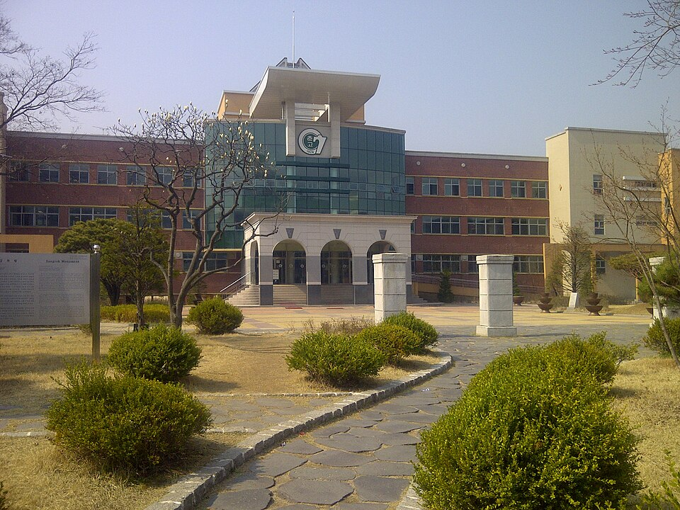

강원 춘천은 관리 중인 학교가 76곳입니다. 고등학교가 14곳, 중학교가 20곳이고, 춘천고등학교·강원고등학교·춘천여자고등학교·성수고등학교·유봉여자고등학교 같은 고등학교와 후평중학교·퇴계중학교·남춘천중학교 같은 중학교가 시 안에 모여 있습니다. 퇴계동·후평동처럼 아파트가 많은 동네와 효자동·석사동 쪽은 통학 동선도 학원 시간대도 달라서, 시간표가 맞지 않는 학생은 집으로 오는 1:1 국어과외나 수학과외를 따로 찾게 됩니다.
오늘은 춘천으로 직접 찾아가는 선생님 3명 중 두 분을 소개합니다. 한 분은 초등 한글부터 고3 국어까지 보는 선생님, 한 분은 수학을 전공하고 초등 연산부터 고등 기초까지 이어 주는 선생님입니다.
퇴계동·석사동 쪽에서 중등 국어과외나 고등 국어 내신을 방문으로 받고 싶을 때 맞는 선생님입니다. 중등 문법과 문학부터 고등 심화 과정까지 지도하고, 어휘·독해·문법·문학·비문학을 파트별로 나눠 수업할 수 있습니다. 고등학생은 모의고사 대비까지 함께 봅니다.
초등은 한글 읽기·쓰기부터 시작할 수 있어서, 국어가 늦게 출발한 저학년도 받아 줍니다. 수학은 초등부터 고1까지 개념 노트와 오답 노트를 반드시 쓰게 하는 방식으로, 수학을 놓아 버린 학생의 기초를 다시 세우는 데 초점을 둡니다. 첫 달을 비우지 않고 바로 첫 테스트를 진행해 지금 상태를 확인하고, 학부모님과 수업 내용을 자주 주고받습니다.
진ㅇ애 선생님 상세 프로필 →후평동·효자동 쪽에서 고1 수학과외로 개념부터 다시 잡고 싶을 때 맞는 선생님입니다. 수학과를 나온 전공자로, 초등 연산부터 중등 내신, 고등 수능 기초까지 끊기지 않게 연결해 지도합니다. 영어는 중3까지 함께 볼 수 있습니다.
수업은 먼저 학생 수준을 진단하고 그에 맞춘 진행표를 만드는 방식입니다. 기초 개념부터 심화까지 단계를 나눠 올라가고, 틀린 문제는 약점 유형으로 묶어 반복 훈련합니다. 수업이 끝나면 학부모님께 그날 진행 내용을 바로 전달하고, 출결과 진도를 꾸준히 관리합니다. 차분하게 설명하는 편이라 수학에 자신감이 떨어진 학생이 다시 시작하기에 부담이 적습니다.
조ㅇ장 선생님 상세 프로필 →학교마다 진도와 시험 범위가 달라서, 학교별로 준비법을 따로 정리해 두었습니다.
👉 춘천 국어과외 선생님 · 춘천 수학과외 선생님 · 관리 학교 76곳 전체 보기